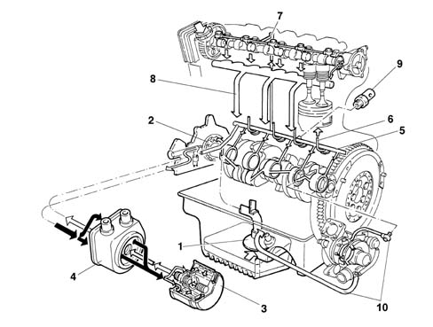
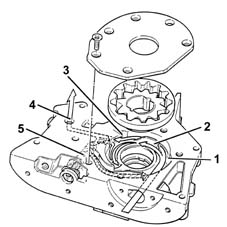
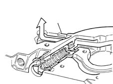
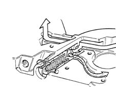

Introduction - ENGINE LUBRICATION SYSTEM
- Path
- Descriptions > 10 ENGINE UNIT > 1084 ENGINE LUBRICATION SYSTEM > Introduction - ENGINE LUBRICATION SYSTEM
- Kind
- system description
- Applies to
- all engines; all production periods
- Interactive page
- https://sloeber94.github.io/elrnDB-fMltpl/en/#/2892432
Applies to: all engines; all production periods
Applies to: engines: 1.9 JTD 8V; all production periods
VIEW OF ASSEMBLY
-

1, Suction pipe with filter mesh 2, Oil pump 3, Oil filter cartridge 4, Water/oil heat exchanger 5, Main longitudinal duct 6, Jets (piston skirt cooling) 7, Vertical duct (camshaft support lubrication) 8, Oil return to sump 9, Engine oil pressure warning light switch 10, Turbocharger lubrication pipes
ENGINE OIL PUMP
The oil is drawn in from the sump by means of the vacuum created by the rotation of the sprockets fitted on the crankshaft.
Vacuum is present between the sprocket separating wall (2) and the oil sump suction pipe.
Pressure instead develops after the separating wall (2) in all the oil delivery pipes (4).
When the pressure exceeds 5 bar, the force exerted on the limiting valve (5) overcomes the reaction of the spring below and moves the valve to open the connecting pipe between the pressure chamber (3) and the low pressure chamber (1).

1, Low pressure chamber 2, Separating wall 3, Pressure chamber 4, Oil delivery pipe 5, Pressure limiting valve
Closed operating position of oil pressure limiting valve.

Bypass operating position of limiting valve.
